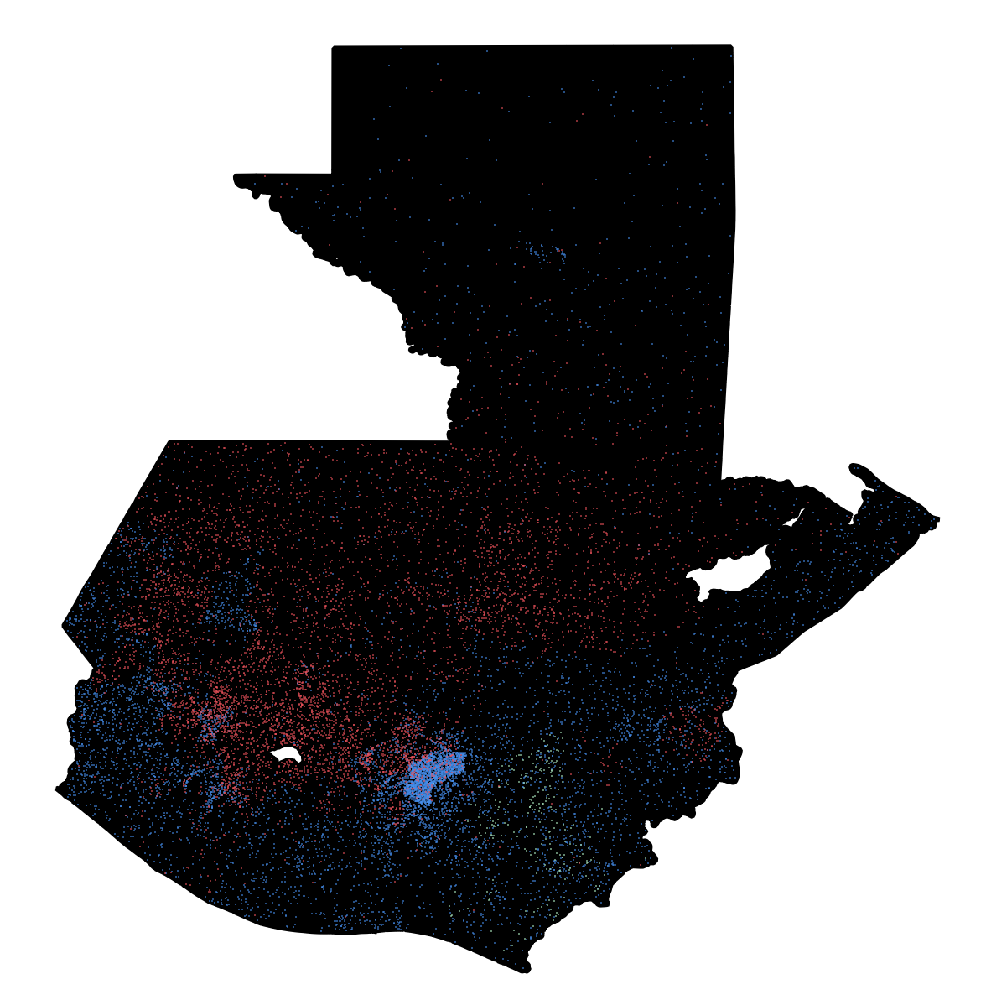
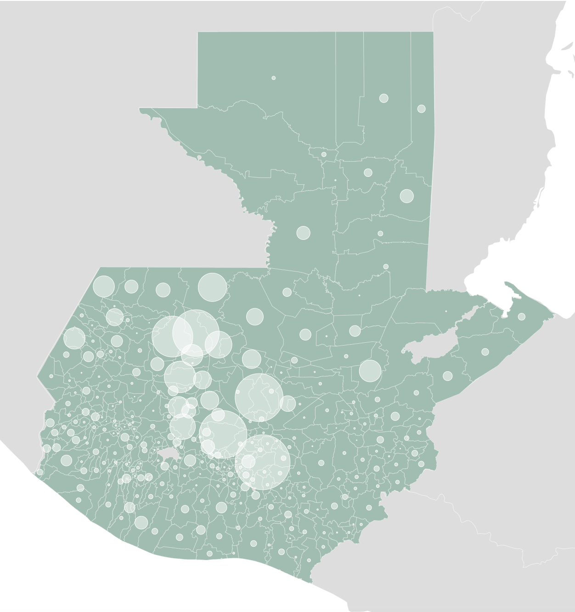

The name Guatemala is derived from the Náhuatl word Cuauhtēmallān, meaning "place of many trees". Yet Guatemala might just as easily be called the "land of many peoples". In this small country of 16 million people, rich biodiversity is matched by a kaleidoscope of cultural identities. Despite centuries of marginalization and exploitation by a tiny political-economic elite, Guatemala's many indigenous peoples have preserved their communities, traditions, and languages. Understanding the geography of identity in Guatemala is critical to grasping the nation's fraught history and present politics.
Above: I think the image at top is definitely a possibility for a splash or chapter image for the final visual story. I lightened and softened the background while keeping the woman walking in sharp focus, trying to emphasize the focus on humanized storytelling.
Though still simple, the map directly above here represents a lot of hard work towards one of my draft requirements on the usability side:
1) Responsive Immersive Design:
The visual story will be designed to work seamlessly on both laptop and mobile device screens, ensuring an immersive, full-screen visual experience for all aspect ratios from 9:16 to 16:9. Among other advantages, web-based visual graphics enjoy freedom from the constraints of traditional video aspect ratios, which are only full screen for certain viewports. I will exercise that advantage, designing a visual experience that is optimized across a wide range of devices. Failure to implement mobile-friendly design would exclude many users in both the U.S. and Guatemala whose only access to the Internet is via mobile devices, including higher proportions of poor, rural, and indigenous people. Therefore, designing responsively is not only a matter of usability, but of equitable access to information.
I actually found some interesting data from Guatemala that backs up the above assertion that disadvantaged populations lack access to computers. The data has percentages of the population in each municipality in Guatemala that have Internet, computers, and cell phones. I'm guessing it's likely true that higher proportions of populations experiencing migration are using mobile devices as their only access to Internet, though I would need to do some more analysis to confirm that. While that data likely won't make it into the visual story itself, it may be interesting to discuss in the thesis, regarding the definition and limitations of the target audience. Since many people have access to the internet, the visual story is potentially viral, but many migrants have either NO access to the Internet, or only have mobile devices.
Either way, I've managed to do something with the map above that I'm pretty proud of: design a full-screen map that is responsive across devices with almost all CSS and very minimal Javascript. The map has custom projections and seamlessly lines up D3-drawn vectors with pre-designed raster imagery, so I can add interactivity and animations to the map while keeping high cartographic standards for the background raster imagery(designed with Blender/Photoshop). Regardless of whether someone is viewing the map above on a widescreen or on a portrait-oriented mobile device, the map remains full screen and always keeps a focus area(in this case, the bounding box of Guatemala) in view. It doesn't need any event listeners for redrawing of the vectors.
I think the technique above will lend itself to creating a story that is really compelling visually. One thing I've been thinking over is whether writing up blog posts or tutorials on my design process should or could be considered as either
a) An outcome or product of my hybridized design process
b)part of the contribution of my thesis work itself.
I think an argument could definitely be made for the former, yet at the same time I think it's important to weigh the pros and cons of doing so. Open sourcing everything all the time isn't necessarily the answer. I think particularly with sharing techniques that lend a 'compelling' quality to visual stories, carefully considering the context of open sourcing and who benefits is important. As you say in your paper, visual storytelling without an attendant ethics is a recipe for further harm. If I invest time in sharing techniques for creating compelling visual stories, then that knowledge is harnessed to design a visual story demonizing migrants, I've potentially done more harm than good by open sourcing the details of my process.
Below: Below is a simple screenshot of a work-in-progress dot density map. One dot equals one thousand people.
Blue = Ladino, Red = Maya, Green = Xinka
As you know from seeing the small multiples before, the Maya group is actually made up of 18 distinct ethnic groups. The red dots on the map will be split into 18 separate colors. Since there are so many, I'm switching my approach from using QGIS to designing the dots with D3. Taking the D3 approach will allow me to more easily tweak parameters and refine the design, as well as reproduce the work flow in the future.

Below: The map below is a quick overview of the human rights violations data I discussed in the presentation. Each circle's area is sized by the numbers of deaths/disappearances represented in the database for each municipality. While this data shouldn't be used to make arguments about geographic trends, since it's incomplete, it can certainly be used to show that some of the primarily Maya areas in the central/western mountains that are experiencing extreme levels of migration today were also heavily impacted by the genocide.
Below: The data shown below is from a 2016 study conducted by International Organization for Migration data about remittances from the United States to Guatemala. The study estimated that more than 1.8 million Guatemalan-Americans send money back to families/communities in Guatemala. Of these, they estimate over 1.3 million are undocumented. They also state that over 30% of the population in Guatemala depends on this economic assistance, including more than 2 million kids receiving remittances from parents. This money not only helps them get basic necessities like food but also enables many kids to attend school for long: "the average number of years of schooling for the population receiving remittances- 15 years of age and over - is 8.4, higher than the national average that reaches 4.9 years".
The specific data visualized below is estimated numbers of remissions senders in each state of the U.S. that come from various departments of Guatemala. I think this data is a really good proxy for actual migration flows at a sub-national level. I think that the 'fluid' nature of this visualization is potentially problematic:
Upsides:
-Because the data is sub-national, we move beyond the Westphalian paradigm of the nation state as the fundamental unit of analysis.
-The data and interactivity are multidirectional- that is to say, the flows represent not only the movement of people from Guatemala to the US, but the flow of money back to communities in Guatemala from the US. This addresses the narcissistic tendency of state-centric maps to portray all movement as towards the US.
-Brings the story close to home: for a target audience that inludes users in both the US and Guatemala, this provides a personalized geographic connection to the data. A user in Florida can see what regions of Guatemala are sending the most migrants to Florida, and a user in Huehuetenango can see which states most remittance money is coming from. I know that my own emotional investment in this project increased when I realized that Central American migrants weren't just in the U.S., but in my own community, working at vineyards in upstate NY and on dairy farms in Wisconsin.
Downsides:
-It's easy to imagine xenophobic interests hijacking this visualization to further their political arguments. While I personally find it incredibly beautiful and humanizing that so many Guatemalans maintain strong family and community ties despite the passing of time and physical distance, users of different political understandings will undoubtedly see this differently, arguing that remittances represent a drain on our economy and and unwillingness to assimilate. I can just imagine someone screenshotting this visualizing and saying something ot the effect of "There are over 500,000 Guatemalans leaching off our economy in California", nevermind the fact that those people are providing essential labor in many industries.
Make sure to try switching between the sankey and map flow versions as well as hovering for both versions.
State of Residence
Department of Origin